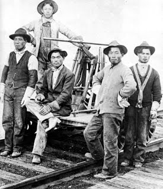

The Great DepressionCarlos Aguero McCorkle
Cause of The Great DepressionIn 1929 the stock market reached its peak after the decade of rapid growth and prosparity in the U.S. This was "the Roaring Twenties" In this decade the total wealth of the U.S. more than doubled. Anyone could, and often would, pour their savings into stocks at this time. By 1929 unemployment had already increased and production had declined. This made stock prices higher than their actual value. The economy was falling apart, drouts and falling food prices caused the agricultural sector to struggle. This, coupled with banks overborrowing, low wages, and consumer debt ever increasing casued a mild recession in the summer of 1929.  Japanese American's HistoryThe American gvernment applied the same prohibitions to Japan as it had to China previously. Japanese in the 1890's immigrated to the U.S. and took jobs as laborers. They often suffered from poor work conditions and low wages. They seemed to be very useful to employers but did not get along with unions or fellow employees. The Japanese distinguish themselves according to the number of generations one's family has been in the U.S. Issei was the first generation, their children were Nisei. Third generation was Sansei and their children are the Yonsei. The Kibei were part of the Nisei that were sent back to Japan for schooling and arranged marriages. When the Chinese Exclusion Act of 1882 came, West Coast employers welcomed the Issei with open arms to replace the dwindling number of chinese. Eventually the same people that were anti-chinese became anti-japanese also and created the stereotype that japanese were lazy, dishonest, and untrustworthy. In 1913 California put the Alien Land Act into action. Attacks on Japanese americans were concentrated on limiting their ability to earn a living. The Issei were driven into cities where they were denied jobs due to government and union restictions. This caused them to turn to self-employment. This gave them a marginal postion in the cities' expanding economies. 
Executive order 9066After the attack on Pearl harbor, U.S. citizens thought we needed to "do something" about the japanese in the U.S. On February 13, 1942 President Franklin Roosevelt signed executive order 9066. This meant any person that was even just 1/8 Japanese on the West Coast were taken to assembly centers to be transfered to evactuation camps. That means 90% of all 126,000 mainland Japanese were moved to internment camps, 2/3 were citizens, 3/4 were under 25. Evacuees agreed to turn over all property and assumed risks of it, the internment destoryed them financially Vocabulary/Key Terms |